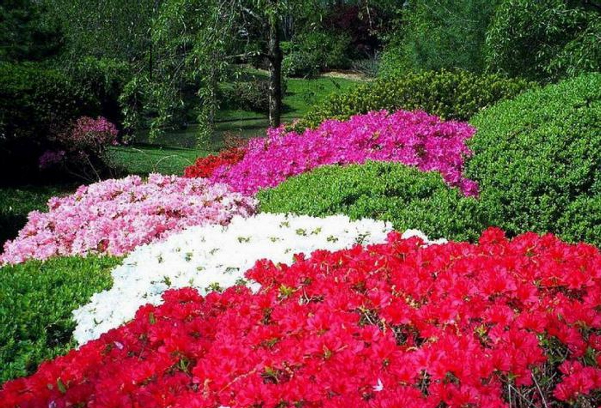
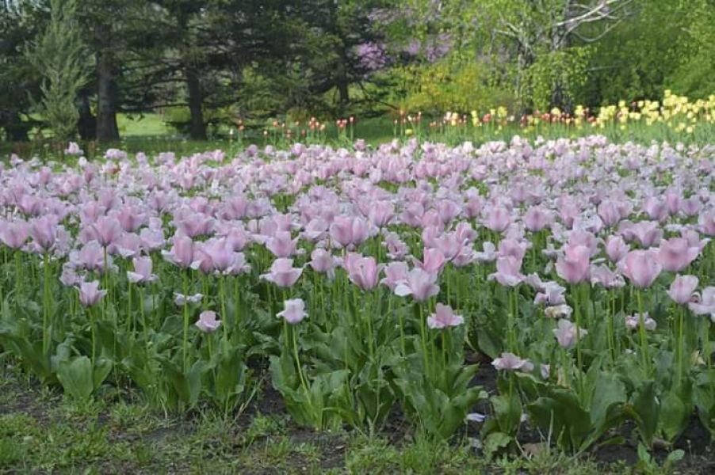
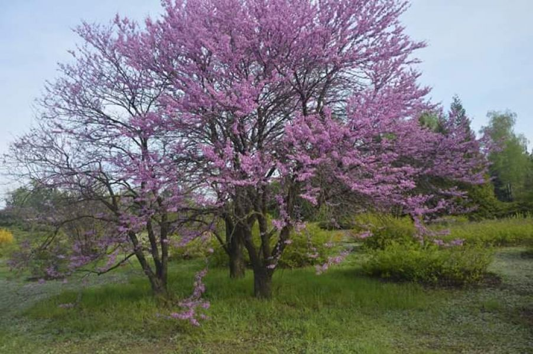
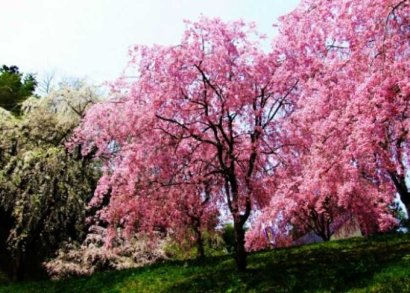
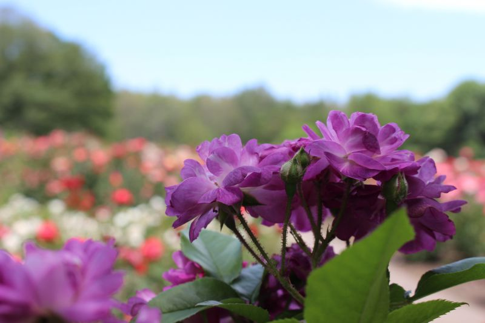

Ботанічний сад в Кривому Розі
-

Перші в новому сезоні відвідувачі зможуть сповна помилуватися цвітінням калини, кизилу, розпустилися тюльпанами, крихітним первоцвітам.
-

На початку квітня можуть цвісти адониси амурські, весенніков, потім Лейбніц, Джефферсон, рясту, анемони. На грядках можете подивитися інші види Адоніс.
-

З кінця квітня зацвітають крокуси, за ними - Сцилли, мускарі, потім - флокс шилоподібний і численні сорти ірису карликового.
-

Тут знаходиться найбільший сад сакур в області - 110 японських дерев висаджено на 50-метровій алеї. Всього в парку росте 5 видів сакур
-

У травні зацвітають тюльпани і нарциси. Масове цвітіння магнолій і рододендронів різних видів. В кінці травня - початку червня цвіте кінський каштан.